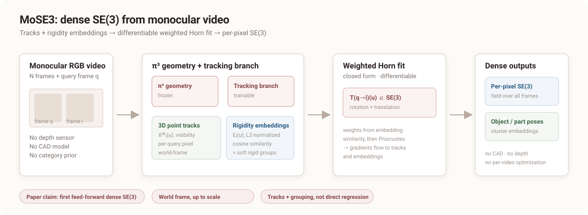

Paper reading note · NeurIPS 2026 Spotlight
MoSE3: Learning World-Space SE(3) at Every Pixel
Dense 6-DoF motion from monocular video, built from 3D point tracks and learned rigidity embeddings.
TL;DR MoSE3 predicts a full SE(3) transform at every pixel in a shared world frame, by learning 3D point tracks and rigidity embeddings and fitting the transform in closed form. Object- and part-level poses then come from clustering the embeddings.
Cite this paper
@inproceedings{mose3_2026,
title = {MoSE3: Learning World-Space SE(3) at Every Pixel},
author = {Cheng, Jiahuan and Li, Zhiyi and Xia, Tian and Cai, Ruojin and Du, Yilun and Wang, Qianqian},
year = {2026},
note = {NeurIPS Spotlight}
}
Summary
Dense 3D point tracking tells us where pixels go, but a track is only a 3D translation curve. It does not say how the underlying part rotates, and it does not say which pixels move together as one rigid body. MoSE3 targets that missing structure: a full SE(3) transform at every pixel, in a shared world frame, from monocular RGB video.
MoSE3 is the first feed-forward model to predict dense, per-pixel, world-frame SE(3) motion from monocular RGB video, without CAD models, depth sensors, category priors, or per-video optimization.
The core idea
Instead of regressing rotation and translation directly, MoSE3 predicts two intermediates:
- Dense 3D point tracks \( \mathbf{X}^{w}_{i} \), which say where each query pixel goes in 3D.
- Rigidity embeddings \( \mathbf{E}_{q} \), whose cosine similarity says which pixels move rigidly together.
Given those, the SE(3) motion of a pixel is recovered by a weighted Horn fit, a closed-form Procrustes alignment inside a soft rigid cluster:
The weights are a softmax over embedding similarity. The fit is differentiable, so the SE(3) loss trains both the tracks and the grouping. That is the technical heart of the paper.
Headline evidence
| Benchmark | Metric | MoSE3 | Best baseline |
|---|---|---|---|
| HO3D, per-pixel | RRE ↓ | 18.28° | 36.45° |
| iTACO, per-pixel | RRE ↓ | 12.30° | 28.60° |
| 3D tracking, avg. | L-16 ↑ | 0.5941 | 0.5847 |
| 3D tracking, avg. | L-50 ↑ | 0.5946 | 0.5402 |
The SE(3) gains are large on both a real rigid hand-object benchmark (HO3D) and a synthetic articulated benchmark (iTACO). The 3D-tracking margin over Track4World is real but much smaller, especially at L-16.
What it does not do
The method depends on π³ for camera poses and pointmaps; camera errors propagate. “World-space” is a shared frame up to scale, not necessarily metric world coordinates. Deformable motion is evaluated only qualitatively, and fast motion degrades the tracks that the SE(3) fit depends on.
This is best read as a structured upgrade of dense 3D tracking: keep the tracking backbone, add rotation and rigid grouping, and let SE(3) supervision shape both. It is a strong fit for manipulation and physical reasoning, but not a replacement for model-based 6D pose when a CAD model, metric scale, or known identity is available.
Technical deep dive
1. Formulation
Let \(I_1,\ldots,I_N\) be the input frames and \(q\) the query frame. The goal is a dense field of transforms \(\mathbf{T}_{q\to i}(\mathbf{u})\in SE(3)\) such that
The model is not asked to output a single object pose. It outputs a transform per pixel; object-level structure is a property that emerges from grouping pixels with similar rigidity embeddings.
2. Architecture
The geometry branch is a frozen π³-Large model. Its pointmaps and camera poses provide the world-frame scaffold. A trainable tracking branch is attached alongside it, and its tokens attend to the frozen geometry tokens. Two heads read the tracking features:
- Point-tracking head: predicts normalized image coordinates, signed depth, and visibility for every query pixel in every target frame.
- Rigidity-embedding head: predicts an L2-normalized embedding on each frame's image grid. It is query-frame invariant, because rigid-body identity belongs to the scene, not to the query.
3. Why Horn instead of direct regression
Direct SE(3) regression is possible, but rotations live on a curved manifold and dense SE(3) annotations are scarce. The decomposition replaces one hard regression with two better-supervised targets. The ablation is decisive: on iTACO per-pixel SE(3), direct regression reports 24.57° RRE, while the full model reports 17.27°.
The Horn fit is a differentiable “geometric layer.” It does not add parameters; it adds structure. The network learns tracks and grouping, and the layer turns them into a valid rigid transform.
4. Joint supervision
The objective combines a tracking loss, a visibility loss, a rigidity-affinity loss, and an SE(3) loss. The affinity loss has two forms: an SE(3)-based target when labels exist, and a track-based target that only requires constant pairwise 3D distance over time. The latter lets the embedding train on clips without SE(3) annotations.
| Variant | RRE ↓ | AUC_r ↑ | ADD ↓ | AUC_ADD ↑ |
|---|---|---|---|---|
| Direct SE(3) regression | 24.57 | 0.525 | 19.05 | 0.393 |
| Track-only + k-NN | 31.11 | 0.453 | 20.96 | 0.382 |
| w/o SE(3) loss | 23.90 | 0.555 | 17.82 | 0.465 |
| Full MoSE3 | 17.27 | 0.647 | 14.09 | 0.517 |
5. Art-Kubric
Art-Kubric is the data side of the contribution: 5,000 synthetic scenes, 120 frames each, articulated and rigid objects under physics simulation, dense long-range tracks, per-pixel rigid-part labels, and per-link SE(3) at every frame. It is released under CC BY-NC 4.0.
How much of the real-world generalization comes from Art-Kubric, and how much from the other five training sources? The ablation removes Art-Kubric entirely, but does not ablate the other sources one by one.
Full academic explainer
Background: why SE(3), not a track
A 3D point track is a function \(t \mapsto \mathbf{X}(t)\in\mathbb{R}^3\). It tells you where a point is, but not how the body carrying that point rotates. A rigid transform \(\mathbf{T}\in SE(3)\) carries both rotation and translation, and a collection of pixels sharing one transform defines a rigid body. That is the representation MoSE3 is after.
Horn's method, briefly
Given corresponding 3D points \(\mathbf{s}_v\) at the query frame and \(\mathbf{t}_v\) at the target frame, with weights \(w_v\), the weighted Procrustes problem is solved by:
- computing weighted centroids \(\bar{\mathbf{s}}\) and \(\bar{\mathbf{t}}\);
- forming the weighted cross-covariance \(\Sigma\);
- building Horn's matrix \(H\) from \(\Sigma\) and taking the unit quaternion eigenvector for the rotation;
- setting \(\mathbf{t}=\bar{\mathbf{t}}-\mathbf{R}\bar{\mathbf{s}}\).
The authors prefer Horn's quaternion form over SVD because it gives more stable gradients in their differentiable training loop. The fit is exact for a rigid body and differentiable, which is why the SE(3) loss can train the upstream predictors.
Scale and coordinate conventions
This is the caveat to keep in view. Training uses scene-scale normalization. Evaluation aligns predicted tracks to ground truth with a global scale and translation before computing metrics. The output is a shared world-frame motion field, but it is not guaranteed to be metric. For robotics, do not treat it as a metric object pose without an external scale source.
“World-space” in this paper means a shared reference frame, not necessarily metric world units. The evaluation protocol uses scale/translation alignment. For a survey on object 6DoF SE(3), this distinction should be explicit.
Reading the results fairly
The strongest evidence is the per-pixel and object/part-level SE(3) result on HO3D and iTACO, plus the ablation against direct SE(3) regression and track-only variants. The 3D-tracking result is also strong, but the L-16 margin over Track4World is small and MoSE3 is second on ADT L-16.
The baselines are adapted 3D trackers using a shared post-hoc protocol: for each query pixel, take its 3D k-nearest neighbors at the query frame, treat them as a rigid group, and fit a transform with Horn. MoSE3 also reports a k-NN variant, which already beats every baseline; the rigidity-embedding variant adds the learned grouping on top. This is a fair adaptation, but it is not the same as comparing to a method trained with dense SE(3) supervision.
References
- Horn, B. K. P. Closed-form solution of absolute orientation using unit quaternions. Journal of the Optical Society of America A, 4(4):629–642, 1987.
- Wang, Y., Zhou, J., Zhu, H., et al. π³: Permutation-equivariant visual geometry learning. arXiv:2507.13347, 2025.
- Lu, J., Xu, J., Hu, W., et al. Track4World: Feedforward world-centric dense 3D tracking of all pixels. arXiv:2603.02573, 2026.
- Xiao, Y., Wang, Q., Zhang, S., et al. SpatialTracker: Tracking any 2D pixels in 3D space. CVPR 2024.
- Teed, Z., Deng, J. RAFT-3D: Scene flow using rigid-motion embeddings. CVPR 2021.